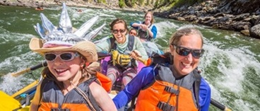

Our Mission
We create unforgettable adventures with passion, safety, and excitement.
We create unforgettable adventures with passion, safety, and excitement.
Salmon River Experience first applied for our outfitters license in 1978 with the goal of providing the highest quality, affordable whitewater adventures available, which are both fun and adventurous while at the same time sensitive to the cultural and environmental needs of the river. SRE started with a yellow school bus, 4 used rafts and 16 life jackets. Now, over three decades later we are able to accommodate over 300 people a day with a fleet of self bailing rafts, kayaks, and support vehicles.